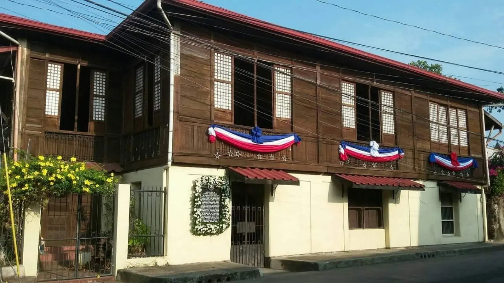
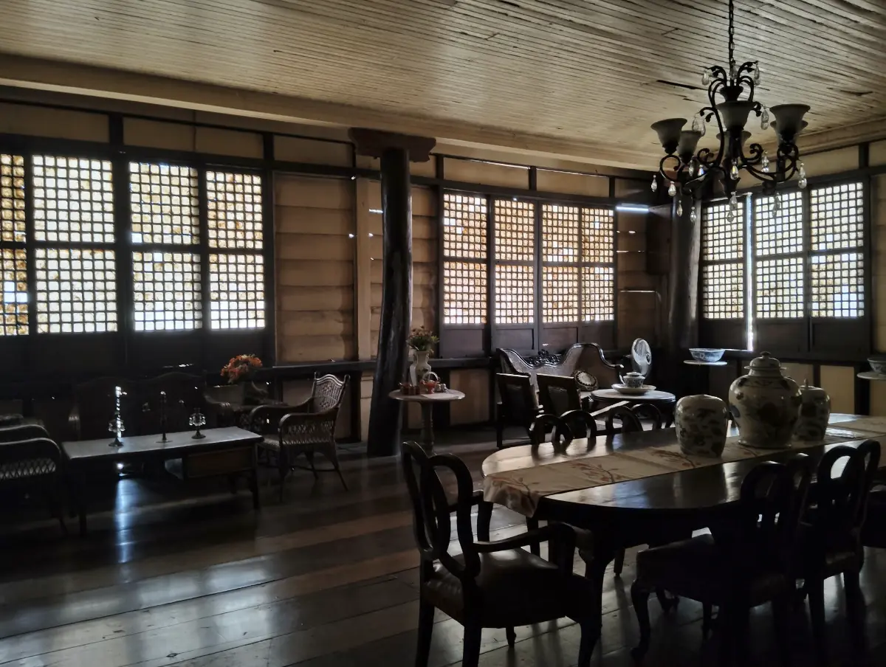
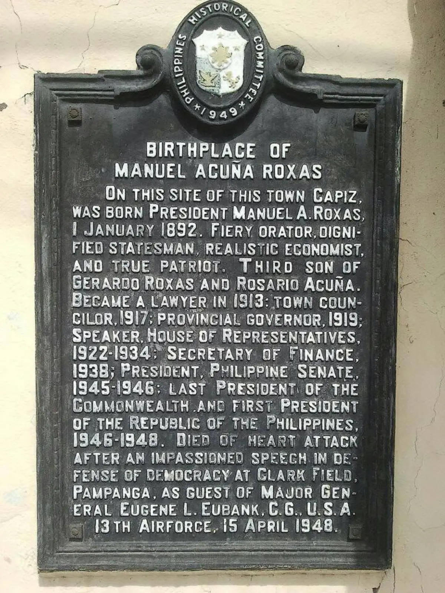
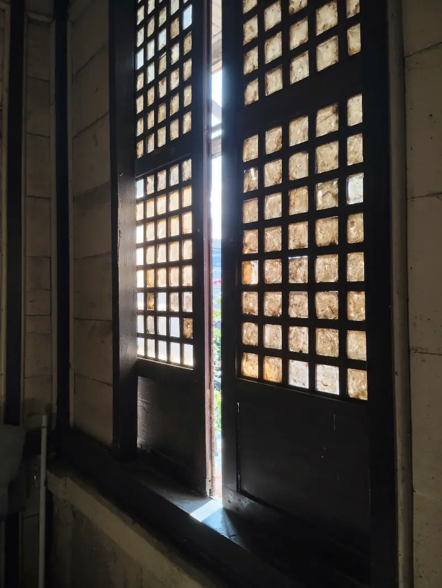
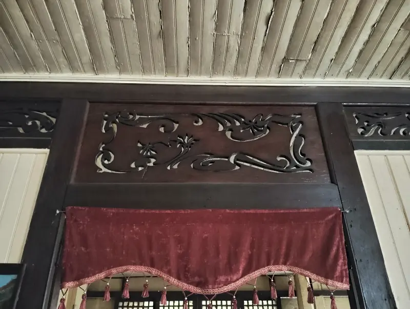
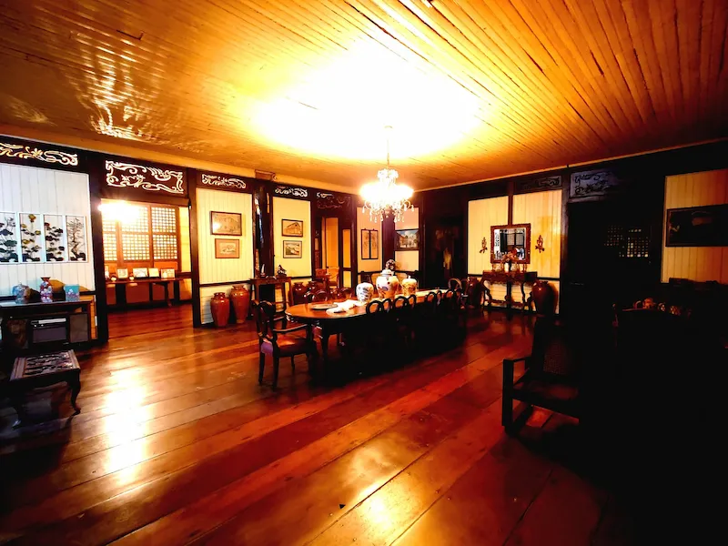
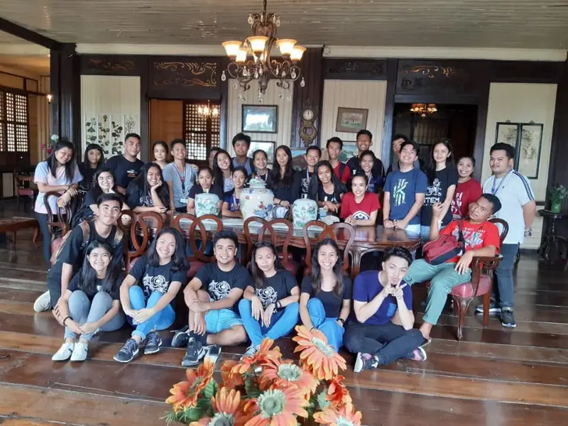

The first President of the Third Republic of the Philippines was born here on January 1, 1892. This bahay na bato in Roxas City, Capiz, is privately maintained by descendants of the Barrios and Albar families.
Visits are by arrangement. Please contact us before visiting.
Message Us on Facebook Plan Your Visit
Address: 34 Zamora Street, Roxas City, Capiz, Philippines
Donation: P50 per visitor
House Rules: No horseplaying. Please respect the premises and the family's privacy.
Accessibility: The house has a stone ground floor and a wooden upper floor accessed by stairs. The upper floor may not be accessible to visitors with mobility limitations.
Important: This is a privately owned heritage house. Visits must be coordinated in advance. Please do not arrive without prior arrangement.
The house is a preserved ancestral home, not a museum with guided exhibits. You will see original furniture, photographs of Manuel Roxas and the Acuña, Barrios, and Albar families, and the architectural features of a traditional bahay na bato: capiz shell windows, wooden floors, and stone walls that survived World War II.
A typical visit takes 15 to 30 minutes. Photography is allowed. There are no formal labels or interpretive panels, so this website and the historical marker outside are your primary sources of context.

Contact the caretaker through the Facebook page or by email. Please allow 2 to 3 days for a response. For urgent coordination, messaging the Facebook page is the fastest channel.
Manuel Acuña Roxas was born on January 1, 1892, in Capiz town (now Roxas City), Capiz. He was the son of Gerardo Roxas and Rosario Acuña. His father died before he was born, mortally wounded by Spanish Guardia Civil. He was the younger of two sons.
He studied law at the University of the Philippines, graduated in 1913, and topped the bar examinations that same year. He entered politics in 1917 and served as a member of the Capiz Municipal Council, Governor of Capiz, and Member of the House of Representatives for Capiz's 1st district. He served as Speaker of the Philippine House of Representatives from 1922 to 1933.
During World War II, Roxas became a Brigadier-General and saw action in Bataan, Corregidor, and Mindanao. He was later rescued by MacArthur and faced charges of collaboration, which were eventually resolved.
On July 4, 1946, Roxas became the first president of the Third Republic of the Philippines. He had been inaugurated as the last president of the Commonwealth on May 28, 1946. His presidency was marked by close ties with the United States, including the ratification of the Treaty of General Relations and the controversial Parity Rights Amendment, which granted U.S. citizens equal rights to Philippine natural resources. He also signed the Bell Trade Act, accepting tariff-free access to American markets in exchange for pegging the peso to the dollar and granting American corporations parity rights.
He died of a heart attack on April 15, 1948, at Clark Air Base in Pampanga.
The house at 34 Zamora Street in Roxas City is a bahay na bato, a traditional Filipino architectural style with a stone ground floor and wooden upper floor. It survived the conflagration that destroyed many homes in Roxas during World War II. A historical marker was installed on the property in 1958 by the Philippine Historical Committee.
The marker text reads, in part: "On this site in the municipality of Capiz, was born Manuel A. Roxas, 1 January 1892. Great Orator, Wise Statesman, Sound Economist, and True Patriot. Second Son of Gerardo Roxas and Rosario Acuña … Last President of the Philippine Commonwealth and first president of the Republic of the Philippines, 1946–1948."
The lot was originally part of a larger property owned by Eleuterio Acuña, the maternal grandfather of Manuel Roxas. The property was later acquired by Don Eleuterio's youngest child, Jovita, who married Conrado Barrios, a Justice of the Court of Appeals during the post-war years. Conrado renovated the house, shifting the layout of the rooms and adding a staircase inscribed with his initials, "CJ." Descendants of Conrado and Jovita lived in the home for a period.
Heritage features of the house include its rubble stone lower floor, wooden upper floor, and galvanized iron roofing. Large overhangs protect the interior from sun and rain, and ventanillas within the window sills allow air circulation. An aljibe (water tank) sits behind the house.
This site is maintained by descendants of the Barrios and Albar families and by Madame Michelle Mandario. The birthplace is currently owned and maintained by Mrs. Lydia Tanghal Albar, widow of the late Miguel Barrios Albar.





1. Wikipedia, Manuel Roxas.
2. National Historical Commission of the Philippines, Observance of the 75th Death Anniversary of Manuel Roxas (2023).
3. Travel Capiz Blog, Birthplace of Manuel Roxas (2011).
4. Wikipedia, Gerardo Roxas y Luis.
5. Official Gazette of the Republic of the Philippines, Manuel Roxas.
6. Senate of the Philippines, Biography of Senate President Roxas.
This is a privately maintained heritage house. Please coordinate before visiting.
We typically respond within 2–3 days. For urgent requests, please use Facebook Messenger.
This form opens your email client. If it does not work, please email us directly at bpmar.roxascity@gmail.com.